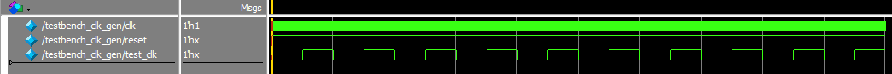
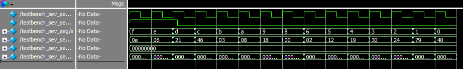

Lab 3: Keypad Scanner
Introduction
In this lab, the I/O pins on the FPGA board were interfaced with a 4x4 matrix keypad and a dual seven-segment display to display asynchronous user inputs in a synchronized fashion. A synchronizer was implemented for this purpose, along with a switch debouncer to prevent switch bounce.
The goal of the lab was to program the FPGA so that the most recent input on the matrix keypad would display on the right of the dual display, and any subsequent inputs would update the display so that the older inputs would shift left and so on. The design of this code and FSMs utilized needed to be robust to be able to deal with various user inputs and expectations.
LINK: E155 Lab 3 Instructions
Design and Testing Methodology
Theoretically, the matrix keypad was read by sending high signals to each of its four rows, and reading the outputs of each column to determine what button was being pressed. The asynchronous user inputs were synchronized to the program clk by a synchronizer, and “read” using a finite state machine (FSM). The keypad reading also output a strobe-like wire, which was the input for the debouncer. Debouncing was utilized to prevent misreading of mechanical switches, and was also implemented as an FSM. Both the debouncer output and the value read off the keypad were combined to store previous and current input values of the matrix in a D flip-flop. The seven-segment display code was reused from last lab to drive the display.
The FSM for the keypad was designed as so. There were 20 states, 4 for reading a row each, and 16 for each key press. With no user input, the FSM is supposed to cycle through the row-checking states, which each send out a specific row output to check if any of the switches are ON. This checking was done via the col inputs, where any value of col that was found to be high would immediately move the FSM to the key-pressed state attributed to the specific key press. Any release of the key returns it to the scanning mode, cycling through the 4 states.
keypadThe FSM for the debouncer was designed with a 10ms delay, making sure that there was a solid 10ms button press before sending a concrete signal to the rest of the system. It utilizes 4 states. It starts in the waiting-at-0 state, where the FSM waits for any input of 1 to move it out to the checking-for-1 state. The waiting-at-0 state also continuously outputs a timer_reset signal to the external 10ms timer, since no input is detected as of now. When some switch bounce or user input drives the switch to 1, we move to the checking-for-1, which starts the external timer by driving timer_reset = 0 and makes sure that any discontinuous input of 1 moves the machine back to the waiting-at-0 state. If the input is continuous for over 10ms, when the timer_done is driven high from the external timer, then the output of this debouncer FSM is driven high as well to signify a debounced signal.
debouncerThe PNP transistor was utilized to source more current for the dual seven-segment display. With only a 8 mA current being sourced from each pin, it was not enough to power each cathode. As a result, the PNP transistors, given a 5 mA current from the base, or the pins, collected from the 3.3V voltage source and pulled a current enough to power the seven-segment display. The 5 mA current at the base was regulated by a resistor of 560 \(\,\Omega\). This was calculated via Ohm’s Law, \(V = IR\), where the voltage drop was calculated by \(2.6 - 0\). The \(2.6 V\) was found by negating the voltage drop from the 3.3 V emitter to the base, as given by \(V_{BE(Sat)}\) from the datasheet. The \(0 V\) was so due to the pin it connected to was grounded. As a result, \((2.6 - 0) / 0.05 = 520\,\Omega\), and the resistor used was a similar 510 \(\,\Omega\). The datasheet mentioned is linked here.
The resistors for each segment of the red dual seven-segment display were chosen based on the datasheet linked here. Around a forward current of 5mA, the forward voltage of each LED segment drops down to 1.8V. Due to the \(V_{CE(Sat)} = 0.7\) at a current of 1 mA, there was a voltage drop from the emitter to the collector, resulting in the collector being at roughly 3 V. Knowing this, we can reconfigure Ohm’s Law to figure out the appropriate resistor. \(R = V/I = (3.0 - 1.8) / 0.002 = 600\), or roughly 620 \(\,\Omega\).
Pull-down resistors were utilized to prevent floating values of col when the matrix keypad’s buttons were not pressed. The value of the resistors were found by calculating a simple \(V=IR\) equation where \(V=3.3V\) and \(I=3mA\), and its output was \(I=1.1k\,\Omega\). 1.2k\(\,\Omega\) resistors were used for each column output.
Technical Documentation
The source code for the project can be found in this GitHub repository.
Block Diagram
Figure 3 depicts the block diagram of the design. The top-level module lab3_mt instantiates eight submodules within it. clk_gen houses the clk generation using the onboard high-speed oscillator through the HSOSC module and a counter to divide it down to 100 Hz. The synchronizer instantiates a simple two-stage flip flop to synchronize the asynchronous column inputs into sync_col. The keypad interacts with the external keypad, sending signals through row as an output and intaking col to determine the number being pressed, if at all, and to output a strobe key_onebit that signals a button being pressed. The strobe is then passed into the debouncer, which uses an external timer module debouncer_timer to create a 10ms delay to determine a true key press. This information and the key pressed information is then passed into keypad_storage, where the last input is stored as well, using a D-flip flop. These two values utilize the sev_seg_sel and sev_seg modules written for lab 1 and 2 to display the values onto a dual seven segment display.
Schematic
Figure 4 depicts the physical schematic of the design. The almost all I/O pins were utilized. As usual, the reset was routed to a button on the board. Same as last lab, each cathode segment of the dual seven-segment display was connected to a pin, and the two common anodes of the display were connected from a source-generating PNP transistor, which were also connected to a pin each on the FPGA. Those pins were enabled and disabled by the seg1en and seg2en enable signals. The row outputs and col inputs of the 4x4 matrix keypad were each assigned to a pin, with 1.2k\(\,\Omega\) pulldown resistors to prevent floating zeros on the inputs.
Results and Discussion
Testbench Simulation
The design did not meet intended design objectives.


Conclusion
The design made in this lab was not successful. Most of my time was spent trying to debug a segmentation-violation error that came up on Lattice during synthesis. In the end, I swtiched to Synplify Pro synthesizer under direction of Kavi, who was unable to solve the issue as well. The biggest issue I found with the design was with the keypad FSM. No matter what, the FSM refued to move to the next reading state, only ever sending a signal to Row 0. As a result of that and probably some other issues I wasn’t able to get a good look at, the seven-segment display wouldn’t change to any other value, outside of the default 0 value. 30 hours were spent on this lab.
AI Prototype Summary
Abriged Chat Log
First Prompt: Target device: Lattice iCE40 UP5K FPGA. Overall Goal: Write SystemVerilog to scan a 4x4 matrix keypad and display the last two hex keys pressed on a dual 7 segment display. Current Goal: Write a synthesizable SystemVerilog module that produces a one‑shot registration signal for the keypad system. Behavior: When a key press is first detected, capture the current key code and assert a single‑cycle “new key” pulse. While any key remains pressed, do not accept additional keys. Only after keys are released should a subsequent press be recognized. This should handle debouncing of the keys. Implement as a small synchronous FSM with enumerated states and glitch‑free outputs. Keep names and interfaces reasonable; do not assume any hidden modules beyond what you define here.
The module uses a small synchronous finite state machine (FSM) to manage key detection, debouncing, and one-shot pulse generation. The FSM transitions between states to handle the debouncing of both key presses and releases. A counter is used to time the debounce periods, ensuring a stable signal before a key press is registered or the system is reset. The output key_strobe is a single-cycle pulse that is generated only once per stable key press. The key_code is also a registered output, making both outputs glitch-free and suitable for subsequent synchronous logic.
Second Prompt: Target device: Lattice iCE40 UP5K FPGA. Write a synthesizable SystemVerilog module that cycles through keypad columns (active‑low, one at a time) and samples rows (active‑low) to detect a single key at a time. Behavior: Iterate columns at a suitable scan rate derived from the divided clock and sample rows. When a key is detected, report a stable key code consistent with a standard 4x4 keypad layout and maintain it while the key remains pressed. Provide a boolean signal indicating whether any key is currently pressed. Use clean state encoding and synchronous logic; avoid combinational feedback and latches.
I will write a synthesizable SystemVerilog module that performs the keypad scanning logic you’ve described. This module will actively drive the columns and read the rows to detect a key press. It will provide a stable key code and a “key pressed” indicator signal.
Third Prompt: Target device: Lattice iCE40 UP5K FPGA with internal oscillator as the root clock source. Write a top‑level SystemVerilog module that instantiates the scanner and one‑shot modules, shifts the last two keys (older ← most recent; most recent ← new), and drives a multiplexed two‑digit seven‑segment display. Requirements: Update the displayed digits only when a new key is registered. Ensure equal apparent brightness and no visible flicker. Keep all logic synthesizable and synchronous; use idiomatic SystemVerilog constructs. Provide any small clock‑enable or divider logic you need. You can also assume that a sevenSegment module exists that takes a 4 bit input and outputs the 7 segments.
keypad_top.sv: This is the top-level module. It handles the system clock, instantiates and connects the scanner and one-shot modules, implements a two-key shift register, and controls a multiplexed dual 7-segment display.keypad_scanner.sv: This module, provided in your most recent context, is responsible for matrix scanning and converting the detected key press into a stable 4-bit code.keypad_register.sv: This is a modified version of the one-shot module. It now takes a key code and a key_valid signal from the scanner and produces a single-cycle key_strobe pulse, effectively debouncing the scanner’s output.sevenSegment.sv: A simple combinational decoder module to convert a 4-bit hexadecimal value into a 7-segment display pattern.
The keypad_top module uses a dedicated counter to cycle between the two display digits at a rate of approximately 2 kHz, which is fast enough to eliminate visible flicker. The last_key and current_key registers are updated only on the rising edge of the key_strobe signal, ensuring the displayed values are stable and change only when a new, valid key is pressed.
Fourth Prompt: the line if (|~row_in) begin in keypad_scanner throws a syntax error
The issue stems from using |~row_in, which can be ambiguous to some compilers. A more robust and clearer way to check for an active-low input is to use the reduction NOR operator ~| or to check if the input is not equal to all ones. I’ve updated the keypad_scanner.sv module to use the reduction NOR operator for better compatibility.
Fifth Prompt: sevensegment.sv(62): duplicate module name sevenSegment
That’s a very common error in hardware design. The “duplicate module name” error means that the synthesis tool is finding more than one definition for the sevenSegment module during compilation.
This typically happens when a single project directory contains multiple files with the same module definition, and they are all included or compiled together. The solution is to ensure each module is defined only once. To fix this and provide you with a clean, working set of files, I’ve regenerated all the required modules.
Reflection
I used Gemini’s 2.5-Flash model for this prototype. Its complete and fixed output for all prompts, synthesized in a Radiant project, are in this repo linked here. After all 3 prompts, it was unsynthesizable. It generated 4 files, keypad_top, keypad_register, keypad_scanner, and sevenSegment. Initially, there was a syntax error where the synthesizer couldn’t accept the syntax for |~, which was fixed by switching to ~|. Then, there was a persistent issue where the synthesizer recognized a duplicate module for sevenSegment, which was confusing as the module was both declared and instantiated only once.
Regarding the output, I found the naming conventions interesting and the header comment as well. There wasn’t any difficulties understanding the syntax, other than some of the flop conventions that the LLM produced. As an LLM with little context, however, it seems like it is unable to grasp how and why the final error popped up, and was unable to fix it. As a result, I would rate this module a 6/10. I think the concepts and the structure of the module work fine, but it isn’t synthesizable at all and has issues when interacting with the rest of the project.
As a result of these LLM outputs, I haven’t changed my stance on using LLMs for these projects. I could probably use it to help write common and/or redundant idioms. However, I am still uncertain of its ability to use external contexts and provide a synthesizable and working module, especially regarding redundant and duplicate content. While coding, it may be a good idea to consult the LLM to figure out reference idioms and removing small bugs and typos, but not good enough to completely generate any program.